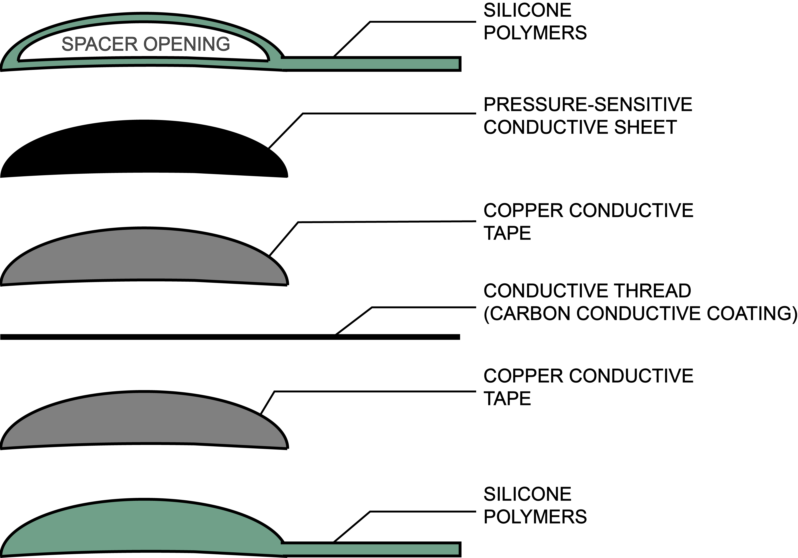

INTRODUCTION
iBlink came from the idea of a double eyelid sticker that is commonly used in Asian countries where many women and men were trying to create the crease on their eyelid for aesthetic purpose. So I decided to use the double eyelid sticker as a circuit button, where two sides of eyelid touched, to create interactions between the user and the computer.
DESIGN PROTOTYPE

I designed the capacitive touch sensor by using pressure-sensitive conductive sheet for sensing pressure. Underneath the conductive sheet, I used conductive thread coated with copper tapes for wiring. On the outer surface, I used silicone polymers as the insulator for skin protection.
DATA COLLECTION
I collected lots of data of user's blinking patterns and capacitance in different scenarios. So far, I included the scenarios, like eye closed, eye normal open, eye open wide, daytime, and nighttime, into my datasets.
TRAIN & PREDICTION
To utilize the collected data from blinking, I apply the data to the machine learning classification algorithm to identify different scenarios. So far, I implemented 3 different datasets to train the program and, based on the algorithm and training datasets, I make prediction of the scenarios.
Developed by: Elle Luo
Advisor: Katia Vega
Video production: Elle Luo